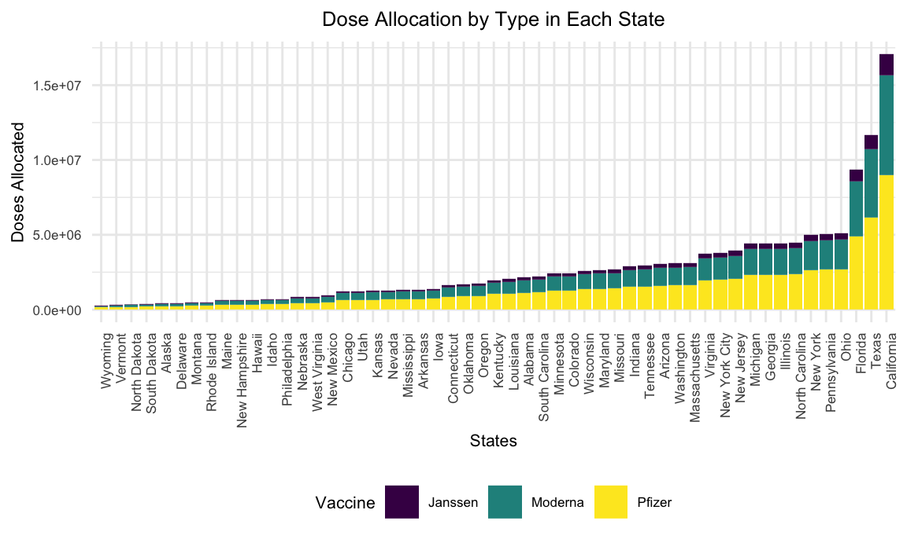

Visualizations
11/21/2021
How has the vaccine been distributed in these areas? What are the rates of uptake/vaccination?
First look at percentage of people vaccinated by each state
perc_vacc =
read_csv(file = "./data/us_state_vaccinations.csv") %>%
filter(date == "2021-11-20") %>%
filter(!(location %in% c("Virgin Islands", "Veterans Health","Republic of Palau", "Puerto Rico", "Northern Mariana Islands", "Marshall Islands", "Indian Health Svc", "Guam", "Federated States of Micronesia", "District of Columbia", "Dept of Defense", "Bureau of Prisons", "American Samoa", "United States"))) %>%
select(location, people_fully_vaccinated_per_hundred)## Rows: 19795 Columns: 14## ── Column specification ────────────────────────────────────────────────────────
## Delimiter: ","
## chr (1): location
## dbl (12): total_vaccinations, total_distributed, people_vaccinated, people_...
## date (1): date##
## ℹ Use `spec()` to retrieve the full column specification for this data.
## ℹ Specify the column types or set `show_col_types = FALSE` to quiet this message.url = "https://developers.google.com/public-data/docs/canonical/states_csv"
latlong_html = read_html(url)
latlong_df =
latlong_html %>%
html_table() %>%
as.data.frame() %>%
select(-state) %>%
relocate(name) %>%
rename(location = name) %>%
mutate(
location = recode(location, "New York" = "New York State"))Merging of dataset to get lat/long
map_df = merge(perc_vacc, latlong_df , by = "location")Plot of percentage vaccinated
percentage_plot =
map_df %>%
mutate(
location = fct_reorder(location, people_fully_vaccinated_per_hundred)
) %>%
ggplot(aes(x = location, y = people_fully_vaccinated_per_hundred)) +
geom_point() +
labs(
x = "State",
y = "Percentage of People Fully Vaccinated",
title = "Percentage of People Fully Vaccinated by State") +
theme(plot.title = element_text(hjust = 0.5)) +
theme(text = element_text(size = 8),
axis.text.x = element_text(angle = 90, hjust = 1))Map of percentage vaccinated
pal = colorNumeric("viridis", NULL)
map_df %>%
leaflet() %>%
addTiles() %>%
addCircleMarkers(~longitude, ~latitude, color = ~pal(people_fully_vaccinated_per_hundred))#Work on creating choropleth map (?)Now look at total number of vaccines shipped to each state and the number of people vaccinated
uptake_df =
read_csv(file = "./data/us_state_vaccinations.csv") %>%
filter(date == "2021-11-20") %>%
filter(!(location %in% c("Virgin Islands", "Veterans Health","Republic of Palau", "Puerto Rico", "Northern Mariana Islands", "Marshall Islands", "Indian Health Svc", "Guam", "Federated States of Micronesia", "District of Columbia", "Dept of Defense", "Bureau of Prisons", "American Samoa", "United States"))) %>%
select(location, people_vaccinated, total_distributed) %>%
mutate(
rate_of_uptake = people_vaccinated / total_distributed)## Rows: 19795 Columns: 14## ── Column specification ────────────────────────────────────────────────────────
## Delimiter: ","
## chr (1): location
## dbl (12): total_vaccinations, total_distributed, people_vaccinated, people_...
## date (1): date##
## ℹ Use `spec()` to retrieve the full column specification for this data.
## ℹ Specify the column types or set `show_col_types = FALSE` to quiet this message.Plot rate of uptake by state
uptake_plot =
uptake_df %>%
mutate(
location = fct_reorder(location, rate_of_uptake)) %>%
ggplot(aes(x = location, y = rate_of_uptake)) +
geom_point() +
labs(
x = "State",
y = "Rate of Uptake",
title = "Percentage of Vaccination Uptake by State") +
theme(plot.title = element_text(hjust = 0.5)) +
theme(text = element_text(size = 8),
axis.text.x = element_text(angle = 90, hjust = 1)) Create choropleth map for this (?)
Let’s look at how the different vaccines are distributed in the US
Pfizer Allocation
pfizer_df =
GET("https://data.cdc.gov/resource/saz5-9hgg.csv") %>%
content() %>%
janitor::clean_names() %>%
filter(!(jurisdiction %in% c("Virgin Islands", "Veterans Health","Republic of Palau", "Puerto Rico", "Northern Mariana Islands", "Marshall Islands", "Indian Health Svc", "Guam", "Federated States of Micronesia", "District of Columbia", "Dept of Defense", "Bureau of Prisons", "American Samoa", "United States", "Federal Entities", "Mariana Islands", "Micronesia", "Palau", "U.S. Virgin Islands"))) %>%
group_by(jurisdiction) %>%
summarize(sum_of_first = sum(x1st_dose_allocations)) %>%
rename(pfizer = sum_of_first)## Rows: 1000 Columns: 4## ── Column specification ────────────────────────────────────────────────────────
## Delimiter: ","
## chr (1): jurisdiction
## dbl (2): _1st_dose_allocations, _2nd_dose_allocations
## dttm (1): week_of_allocations##
## ℹ Use `spec()` to retrieve the full column specification for this data.
## ℹ Specify the column types or set `show_col_types = FALSE` to quiet this message.Moderna Allocation
moderna_df =
GET("https://data.cdc.gov/resource/b7pe-5nws.csv") %>%
content() %>%
janitor::clean_names() %>%
filter(!(jurisdiction %in% c("Virgin Islands", "Veterans Health","Republic of Palau", "Puerto Rico", "Northern Mariana Islands", "Marshall Islands", "Indian Health Svc", "Guam", "Federated States of Micronesia", "District of Columbia", "Dept of Defense", "Bureau of Prisons", "American Samoa", "United States", "Federal Entities", "Mariana Islands", "Micronesia", "Palau", "U.S. Virgin Islands"))) %>%
group_by(jurisdiction) %>%
summarize(sum_of_first = sum(x1st_dose_allocations)) %>%
rename(moderna = sum_of_first)## Rows: 1000 Columns: 4## ── Column specification ────────────────────────────────────────────────────────
## Delimiter: ","
## chr (1): jurisdiction
## dbl (2): _1st_dose_allocations, _2nd_dose_allocations
## dttm (1): week_of_allocations##
## ℹ Use `spec()` to retrieve the full column specification for this data.
## ℹ Specify the column types or set `show_col_types = FALSE` to quiet this message.J&J Allocation
jj_df =
GET("https://data.cdc.gov/resource/w9zu-fywh.csv") %>%
content() %>%
janitor::clean_names() %>%
filter(!(jurisdiction %in% c("Virgin Islands", "Veterans Health","Republic of Palau", "Puerto Rico", "Northern Mariana Islands", "Marshall Islands", "Indian Health Svc", "Guam", "Federated States of Micronesia", "District of Columbia", "Dept of Defense", "Bureau of Prisons", "American Samoa", "United States", "Federal Entities", "Mariana Islands", "Micronesia", "Palau", "U.S. Virgin Islands"))) %>%
group_by(jurisdiction) %>%
summarize(sum_of_first = sum(x1st_dose_allocations)) %>%
rename(jj = sum_of_first)## Rows: 504 Columns: 3## ── Column specification ────────────────────────────────────────────────────────
## Delimiter: ","
## chr (1): jurisdiction
## dbl (1): _1st_dose_allocations
## dttm (1): week_of_allocations##
## ℹ Use `spec()` to retrieve the full column specification for this data.
## ℹ Specify the column types or set `show_col_types = FALSE` to quiet this message.Merge all three vaccines
pfizer_moderna_df =
merge(pfizer_df, moderna_df, by = "jurisdiction")
all_vacc_df =
merge(pfizer_moderna_df, jj_df, by = "jurisdiction") %>%
pivot_longer(
pfizer:jj,
names_to = "vaccine",
values_to = "doses_allocated")Plot
total_allocation =
all_vacc_df %>%
group_by(jurisdiction) %>%
summarize(sum = sum(doses_allocated)) %>%
mutate(
jurisdiction = fct_reorder(jurisdiction, sum)
) %>%
ggplot(aes(x = jurisdiction, y = sum)) +
geom_point() +
labs(
x = "State",
y = "Number of Doses Distributed",
title = "Total Number of Vaccines Distributed to Each State") +
theme(plot.title = element_text(hjust = 0.5)) +
theme(text = element_text(size = 8),
axis.text.x = element_text(angle = 90, hjust = 1))# Could possibly make this into a plotly...Having a hard time deciding how to best show this allocation
type_allocation =
all_vacc_df %>%
mutate(
jurisdiction = fct_reorder(jurisdiction, doses_allocated)
) %>%
ggplot(aes(x = jurisdiction, y = doses_allocated, color = vaccine)) +
geom_point() +
labs(
x = "States",
y = "Doses Allocated",
title = "Dose Allocation by Type in Each State") +
theme(plot.title = element_text(hjust = 0.5)) +
theme(text = element_text(size = 8),
axis.text.x = element_text(angle = 90, hjust = 1)) +
scale_color_discrete(name = "Vaccine", labels = c("Janssen", "Moderna", "Pfizer"))gridExtra::grid.arrange(total_allocation, type_allocation)
gridExtra::grid.arrange(percentage_plot, uptake_plot)perc_vacc_uptake =
merge(perc_vacc, uptake_df, by = "location") %>%
mutate(
rate_of_uptake = 100 * rate_of_uptake,
location = fct_reorder(location, people_fully_vaccinated_per_hundred))
colors = c("Percentage Fully Vaccinated" = "blue", "Uptake Rate" = "red")
ggplot(perc_vacc_uptake, aes(x = location)) +
geom_point(aes(y = people_fully_vaccinated_per_hundred, color = "Percentage Fully Vaccinated")) +
geom_point(aes(y = rate_of_uptake, color = "Uptake Rate")) +
labs(
x = "State",
y = "Percentage",
title = "Percentage of People Fully Vaccinated \nand the Rate of Uptake by State",
color = "Legend") +
theme(plot.title = element_text(hjust = 0.5)) +
theme(text = element_text(size = 8),
axis.text.x = element_text(angle = 90, hjust = 1)) +
scale_color_manual(values = colors)
all_vacc_df %>%
mutate(
jurisdiction = fct_reorder(jurisdiction, doses_allocated)
) %>%
ggplot(aes(x = jurisdiction, y = doses_allocated, fill = vaccine)) +
geom_col() +
labs(
x = "States",
y = "Doses Allocated",
title = "Dose Allocation by Type in Each State") +
theme(plot.title = element_text(hjust = 0.5)) +
theme(text = element_text(size = 8),
axis.text.x = element_text(angle = 90, hjust = 1)) +
scale_fill_discrete(name = "Vaccine", labels = c("Janssen", "Moderna", "Pfizer"))
Vaccination Rate by Age
age_df =
GET("https://data.cdc.gov/resource/gxj9-t96f.csv") %>%
content() %>%
janitor::clean_names() %>%
mutate(
cdc_case_earliest_dt = as.factor(cdc_case_earliest_dt)) %>%
mutate(
series_complete_pop_pct = 100 * series_complete_pop_pct)## Rows: 1000 Columns: 5## ── Column specification ────────────────────────────────────────────────────────
## Delimiter: ","
## chr (1): agegroupvacc
## dbl (3): _7_day_avg_group_cases_per, administered_dose1_pct, series_complet...
## dttm (1): cdc_case_earliest_dt##
## ℹ Use `spec()` to retrieve the full column specification for this data.
## ℹ Specify the column types or set `show_col_types = FALSE` to quiet this message.age_df %>%
filter(
cdc_case_earliest_dt == "2021-11-28") %>%
ggplot(aes(x = agegroupvacc, y = series_complete_pop_pct)) +
geom_col(fill = "blue") +
labs(
x = "Age Group",
y = "Percentage",
title = "Vaccination Rate by Age") +
theme(plot.title = element_text(hjust = 0.5))
Trend of Vaccination Rate by Age
Vaccination Rate by Race Note: Race/Ethnicity was only available for 145,361,148 (73.3%) people fully vaccinated.
race_df =
GET("https://data.cdc.gov/resource/km4m-vcsb.csv") %>%
content() %>%
janitor::clean_names() %>%
mutate(date = as.factor(date)) %>%
filter(
date == "2021-12-03") %>%
mutate(
demographic_category = str_replace(demographic_category, "Race_eth_", "")
) %>%
filter(
demographic_category %in% c("NHBlack", "NHWhite", "Hispanic", "NHAIAN", "NHAsian", "NHNHOPI")) %>%
mutate(
demographic_category = recode(demographic_category, NHBlack = "Black",
NHWhite = "White",
NHAsian = "Asian",
NHAIAN = "American Indian/Alaska Native",
NHNHOPI = "Native Hawaiian/Other Pacific Islander")) %>%
select(demographic_category, series_complete_pop_pct)## Rows: 1000 Columns: 10## ── Column specification ────────────────────────────────────────────────────────
## Delimiter: ","
## chr (1): demographic_category
## dbl (8): administered_dose1, administered_dose1_pct_known, administered_dos...
## dttm (1): date##
## ℹ Use `spec()` to retrieve the full column specification for this data.
## ℹ Specify the column types or set `show_col_types = FALSE` to quiet this message.race_df %>%
mutate(
demographic_category = fct_reorder(demographic_category, series_complete_pop_pct)
) %>%
ggplot(aes(x = demographic_category, y = series_complete_pop_pct)) +
geom_col(fill = "blue") +
labs(
x = "Race/Ethnicity",
y = "Percentage",
title = "Vaccination Rate by Race/Ethnicity") +
theme(plot.title = element_text(hjust = 0.5))
Vaccination Rate by Sex
sex_df =
GET("https://data.cdc.gov/resource/km4m-vcsb.csv") %>%
content() %>%
janitor::clean_names() %>%
mutate(date = as.factor(date)) %>%
filter(
date == "2021-12-03",
demographic_category %in% c("Sex_Male", "Sex_Female")) %>%
mutate(
demographic_category = str_replace(demographic_category, "Sex_", "")
) %>%
select(demographic_category, series_complete_pop_pct)## Rows: 1000 Columns: 10## ── Column specification ────────────────────────────────────────────────────────
## Delimiter: ","
## chr (1): demographic_category
## dbl (8): administered_dose1, administered_dose1_pct_known, administered_dos...
## dttm (1): date##
## ℹ Use `spec()` to retrieve the full column specification for this data.
## ℹ Specify the column types or set `show_col_types = FALSE` to quiet this message.sex_df %>%
ggplot(aes(x = demographic_category, y = series_complete_pop_pct)) +
geom_col(fill = "blue") +
labs(
x = "Sex",
y = "Percentage",
title = "Vaccination Rate by Sex") +
theme(plot.title = element_text(hjust = 0.5))